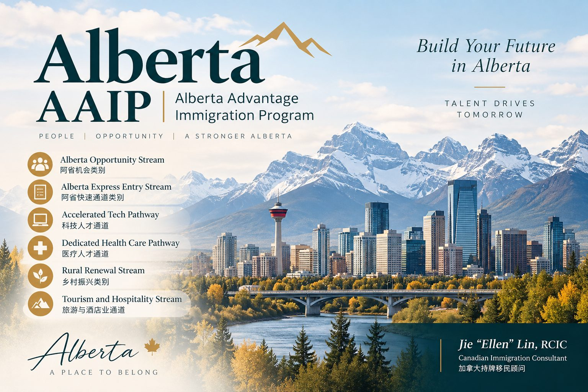

阿省省提名补充公布三轮抽选： AOS最低56分，科技与医疗继续发出邀请
Read in English
Alberta Advantage Immigration Program（AAIP） 近期补充公布了2026年9月三轮省提名抽选结果， 涉及 Alberta Opportunity Stream（AOS）、 Accelerated Tech Pathway 以及Dedicated Health Care Pathway。
三轮抽选显示， 阿省目前仍在持续通过AOS、 科技及医疗类别， 筛选符合省内劳动力市场需求的申请人。
三轮抽选结果
| 日期 | 类别 | 邀请人数 | 最低EOI分数 |
|---|---|---|---|
| 2026年9月1日 | Alberta Opportunity Stream | 575 | 56 |
| 2026年9月3日 | Accelerated Tech Pathway | 96 | 60 |
| 2026年9月9日 | Dedicated Health Care Pathway – Express Entry | 51 | 60 |
AAIP还有多少提名名额？
截至2026年9月9日， AAIP已经使用 4,864个常规省提名名额， 尚余1,739个。
部分主要类别剩余名额包括：
- Alberta Opportunity Stream： 837个；
- Dedicated Health Care Pathway： 208个；
- Accelerated Tech Pathway： 172个；
- Rural Renewal Stream： 384个；
- Tourism and Hospitality Stream： 15个。
Tourism and Hospitality Stream 剩余名额已经非常有限， 而Alberta Opportunity Stream 仍保留相对较多的提名空间。
AOS降至56分意味着什么？
9月1日Alberta Opportunity Stream 最低邀请分数为56分， 对部分已经进入Worker EOI池的申请人来说， 是一个值得关注的信号。
但需要特别注意： 56分并不意味着所有达到56分的申请人都会获得邀请。
AAIP公布的数据显示， AOS池内目前约有 22,381份EOI。
在候选人数远高于剩余提名名额的情况下， AAIP仍会根据阿省劳动力市场需求、 行业及职业重点等因素进行选择。
评估AOS机会不能只看分数
申请人的实际竞争力， 还需要结合以下因素综合判断：
- 职业及行业；
- 是否正在阿省工作；
- 阿省雇主及Job Offer情况；
- 工作许可类别及有效期；
- 是否符合AAIP当前优先处理方向。
达到某一次抽选的最低EOI分数， 并不能保证下一轮一定获得邀请。 AAIP仍会结合当前省内劳动力市场需要 及项目选择重点进行筛选。
2026年接下来还有机会吗？
9月连续三轮抽选说明， AAIP仍在积极发出邀请。
虽然达到上一轮最低分 并不代表一定能够获邀， 但AOS、医疗、科技 及Rural Renewal目前仍有剩余提名名额。
对于已经在阿省工作、 有当地雇主支持， 或职业背景符合阿省当前优先方向的申请人， 2026年的机会还没有结束。
现在正是重新检查Worker EOI分数、 工作许可、Job Offer 以及项目资格， 并为下一轮邀请做好准备的时候。
AAIP Reports Three Additional Draws: AOS Cut-Off Drops to 56
The Alberta Advantage Immigration Program (AAIP) has reported three additional invitation rounds in September 2026, covering the Alberta Opportunity Stream, Accelerated Tech Pathway, and Dedicated Health Care Pathway.
The results show that Alberta continues to issue invitations through the AOS, technology and health care pathways as the province uses its remaining 2026 nomination allocation.
September AAIP Draw Results
- September 1 — Alberta Opportunity Stream: 575 invitations, minimum EOI score 56;
- September 3 — Accelerated Tech Pathway: 96 invitations, minimum EOI score 60;
- September 9 — Dedicated Health Care Pathway – Express Entry: 51 invitations, minimum EOI score 60.
How Many AAIP Nomination Spaces Remain?
As of September 9, 2026, AAIP had used 4,864 regular nomination spaces, with 1,739 remaining.
Remaining allocations for several key streams and pathways included:
- Alberta Opportunity Stream: 837;
- Dedicated Health Care Pathway: 208;
- Accelerated Tech Pathway: 172;
- Rural Renewal Stream: 384;
- Tourism and Hospitality Stream: 15.
The Tourism and Hospitality Stream has very limited nomination space remaining, while the Alberta Opportunity Stream still has a comparatively larger allocation available.
What Does the 56-Point AOS Cut-Off Mean?
The September 1 AOS draw, with a minimum EOI score of 56, may be encouraging for some candidates already in the pool.
However, a score of 56 should not be interpreted as a guarantee of receiving an invitation.
There are approximately 22,381 EOIs in the AOS pool.
With the number of candidates significantly exceeding the remaining nomination spaces, AAIP can continue to select candidates based on Alberta’s labour market priorities and other program considerations.
Candidates Should Look Beyond the EOI Score
A candidate’s prospects should therefore be assessed by looking beyond the EOI score, including factors such as:
- occupation and industry;
- current employment in Alberta;
- Alberta employer and job offer;
- type and validity of work permit; and
- alignment with current AAIP selection priorities.
Opportunities Remain in 2026
The three September draws show that AAIP continues to actively issue invitations.
While meeting a previous cut-off score does not guarantee an invitation, nomination spaces remain under the AOS, health care, technology and Rural Renewal pathways.
For candidates who are already working in Alberta, have employer support, or fit Alberta’s priority occupations, opportunities remain in 2026.
This is a good time to review your Worker EOI, work permit, job offer and program eligibility, and be ready for upcoming draws.